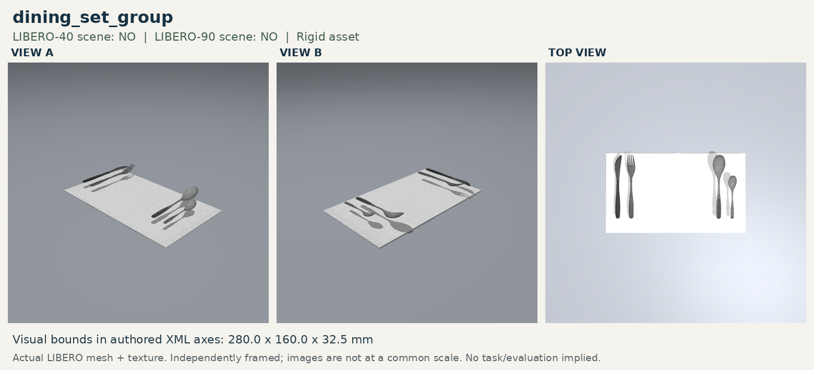

One original episode loads only after a click; the queue advances in task/episode order.

Exact success definition
Success = ordinary LIBERO On(dishware, physical exposed-mat site). The dishware root must be above the finite center site and the dishware must actually contact the dining-set parent. The asset's below-surface native center site is never accepted.
The target keeps the original plate center and yaw. Each task has five distinct goal-false starts and exact current-simulator object/target masks. No mesh, collision geometry, friction, or native success tolerance was edited.
DSET_001
LIBERO_SPATIAL_03 · GPU 6
5/5 · 100.0%
Task: Pick up the black bowl at the table center and place it on the dining-set mat.
Original source: Pick the akita black bowl from table center and place it on the plate
Dishware:akita_black_bowl_1 (Akita black bowl) Initial relation:(on akita_black_bowl_1 main_table_table_center)
Construction: The source plate is replaced by the dining-set group at the exact same center (0.06, 0.20) and yaw. The second source black bowl alone is removed because its position overlaps the wider destination; all nonblocking scene context remains.
Goal:on(akita_black_bowl_1, dining_set_group_1_plate_support_region). The accepted area is the physically supported exposed cloth between the utensils. Native center_region is excluded; ordinary LIBERO On requires actual contact with the dining-set parent.
Original five trials: success ep 0, 1, 2, 3, 4; failure ep none.
Task: Pick up the black bowl on the cookies box and place it on the dining-set mat.
Original source: Pick the akita black bowl on the cookies box and place it on the plate
Dishware:akita_black_bowl_1 (Akita black bowl) Initial relation:(on akita_black_bowl_1 cookies_1)
Construction: The source plate is replaced by the dining-set group at the exact same center (0.06, 0.20) and yaw. The second source black bowl alone is removed because its position overlaps the wider destination; all nonblocking scene context remains.
Goal:on(akita_black_bowl_1, dining_set_group_1_plate_support_region). The accepted area is the physically supported exposed cloth between the utensils. Native center_region is excluded; ordinary LIBERO On requires actual contact with the dining-set parent.
Original five trials: success ep 0, 1, 2, 3, 4; failure ep none.
Task: Pick up the black bowl on top of the wooden cabinet and place it on the dining-set mat.
Original source: Pick the akita black bowl on the wooden cabinet and place it on the plate
Dishware:akita_black_bowl_1 (Akita black bowl) Initial relation:(on akita_black_bowl_1 wooden_cabinet_1_top_side)
Construction: The source plate is replaced by the dining-set group at the exact same center (0.06, 0.20) and yaw. The second source black bowl alone is removed because its position overlaps the wider destination; all nonblocking scene context remains.
Goal:on(akita_black_bowl_1, dining_set_group_1_plate_support_region). The accepted area is the physically supported exposed cloth between the utensils. Native center_region is excluded; ordinary LIBERO On requires actual contact with the dining-set parent.
Original five trials: success ep 1, 2, 3, 4; failure ep 0.
Construction: The source plate is replaced by the dining-set group at the exact same center (0.06, 0.20) and yaw. The second source black bowl alone is removed because its position overlaps the wider destination; all nonblocking scene context remains.
Goal:on(glazed_rim_porcelain_ramekin_1, dining_set_group_1_plate_support_region). The accepted area is the physically supported exposed cloth between the utensils. Native center_region is excluded; ordinary LIBERO On requires actual contact with the dining-set parent.
Original five trials: success ep 0, 1, 2, 3, 4; failure ep none.
Construction: The source plate is replaced by the dining-set group at the exact same center (0.06, 0.20) and yaw. The second source black bowl alone is removed because its position overlaps the wider destination; all nonblocking scene context remains.
Goal:on(white_bowl_1, dining_set_group_1_plate_support_region). The accepted area is the physically supported exposed cloth between the utensils. Native center_region is excluded; ordinary LIBERO On requires actual contact with the dining-set parent.
Original five trials: success ep 4; failure ep 0, 1, 2, 3.